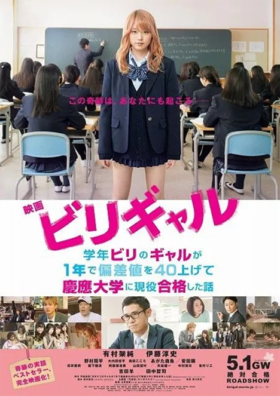
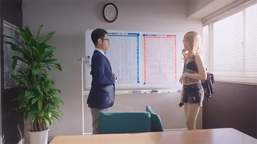
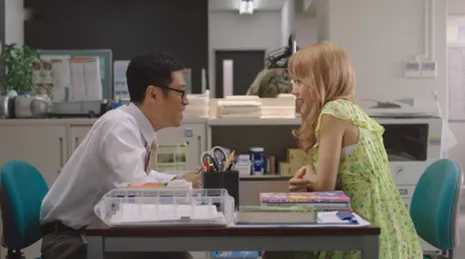
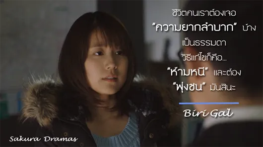

ภาพยนตร์จากเรื่องจริงของเด็กห้องบ๊วยที่สอบติดม.ญี่ปุ่นชื่อดัง!
เรื่องจริงของเด็กนักเรียนม.ปลายญี่ปุ่นคนหนึ่ง จากเด็กที่ไม่เอาไหน แต่กลับสอบเข้ามหาวิทยาลัยชั้นนำของญี่ปุ่นได้ ด้วยวิธีการเลี้ยงดูจากแม่ที่ไม่เหมือนใคร และวิธีการสอนจากคุณครูคนหนึ่งที่ไม่ธรรมดา เป็นภาพยนตร์ญี่ปุ่นอีกเรื่องที่เพื่อนๆ ไม่ควรพลาด
“Biri Gal” เป็นเรื่องราวของ “คุโด้ ซายากะ” (รับบทโดย Kasumi Arimura) สาวแกล ขาโจ๋ประจำห้อง แม้จะอยู่ชั้นม.5 แต่ความรู้ที่มีกลับเทียบเท่ากับเด็กแค่ชั้นป.4!! ครูในโรงเรียนต่างเอือมระอากับพฤติกรรมของเธอ แต่มีเพียงแค่ “แม่” หรือ “อาจัง” (หรือก้าจัง รับบทโดย Yo Yoshida) เท่านั้นที่คอยอยู่เคียงข้างและสนับสนุนเธอมาตลอด ไม่ว่าเธอจะเป็นอย่างไร และแล้ววันหนึ่งซายากะก็ถูกโรงเรียนสั่งพักการเรียน เพราะจับได้ว่า “สูบบุหรี่” และพอถามถึงเพื่อนที่สูบด้วย เธอกลับไม่ปริปากบอก ทำให้อาจารย์ในโรงเรียนโกรธและโมโหมาก ในวันนั้นแม่ของซายากะเลยถูกเรียกตัวมาพบ และรายงานพฤติกรรมของลูกสาวเธอ แต่แม่ของเธอกลับไม่ดุด่าสักคำ และตอกกลับคุณครูด้วยว่า “การที่ลูกฉันไม่เอาเพื่อนมาขาย ฉันภูมิใจในตัวเธอมากค่ะ”
ในระหว่างพักการเรียน แม่ของซายากะก็ได้ยื่นข้อเสนอบางอย่างให้กับเธอ แม่ได้ชวนให้ซายากะลองเข้าไปเรียนพิเศษที่สถาบันแห่งหนึ่ง ด้วยความที่แม่อยู่เคียงข้างเธอมาตลอด เธอจึงยอมไปเรียนพิเศษตามคำขอของแม่เธอ และนี่ก็เป็นจุดเริ่มต้นที่ทำให้ “ซายากะ” ได้พบกับ “คุณครูซึโบตะ” (รับบทโดย Atsushi Ito) ครูสอนพิเศษที่มีวิธีการสอนไม่เหมือนใคร ที่มาพลิกชีวิต “ซายากะ” เด็กเก เรียนก็ไม่เอาไหน มาสอบเข้ามหาวิทยาลัยเอกชนอันดับต้นๆ ของญี่ปุ่นอย่าง “เคโอะ” ให้สำเร็จให้ได้!!
สิ่งที่น่าสนใจของภาพยนตร์เรื่องนี้
เรื่องราวหลักๆ ของเรื่องนี้ก็จะเน้นไปที่ชีวิตของ “ซายากะ” ที่เป็นตัวแทนของเด็กวัยรุ่นจอมซ่า ไม่ได้อยู่ในกรอบ หรือบรรทัดฐานของคำว่า “เรียนดี กิจกรรมเด่น” แต่เป็นเด็กที่มีชีวิตสนุกไปวันๆ เที่ยวเล่นกับเพื่อน โดยไม่สนใจการเรียน แต่ในโลกความเป็นจริงแล้ว ก็คงปฏิเสธไม่ได้ว่าเรื่อง “การศึกษา” นั้นสำคัญ มีผลต่ออนาคต เลยทำให้เด็กที่ไม่สนใจเรียนอย่างซายากะ ต้องมาฟิตอ่านหนังสือสอบ และตรงนี้แหละค่ะ มันทำให้เห็นว่า จากเด็กที่มีความสุข สนุกกับเพื่อนไปในแต่ละวัน เขาต้องหันหน้าเข้าหนังสือ เลิกไปเที่ยวกับเพื่อนฝูงสักระยะจนกว่าจะสอบผ่าน ต้องอ่านหนังสือทั้งวัน ทั้งคืนแทบไม่ได้นอน เหมือนเป็นช่วงชีวิตหนึ่งที่ได้สอนให้วัยรุ่นได้เรียนรู้กับคำว่า “จริงจัง” ในชีวิต ใครที่กำลังอยู่ในช่วงที่กำลังต้องสอบเนี่ย ขอแนะนำเลยค่ะ ดูแล้วได้แรงฮึดจริงๆ
ภาพยนตร์เรื่องนี้จะเดินเรื่องด้วยน้ำเสียงการเล่าเรื่องของ “คุณครูซึโบตะ” และเน้นหนักไปที่วิธีการสอนของคุณครูซึโบตะ และเรื่องราวชีวิตครอบครัวของซายากะค่ะ เรามาดูหลักวิธีการสอนของครูซึโบตะกันก่อนล่ะกันค่ะ วิธีที่ทำให้เด็กม.5 ที่มีผลการเรียนเท่ากับเด็กป.4 สอบเข้ามหาวิทยาลัยชื่อดังของครูซึโบตะก็คือ …
ในวันแรกที่พบกัน ซายากะแต่งตัวแบบเปรี้ยวจี๊ดจ๊าดมากค่ะ ถ้าเป็นอาจารย์ทั่วๆ ไป ก็คงจะตำหนิเธอแล้ว แต่อาจารย์ซึโบตะ กลับพูดแสดงตัวตนว่าเป็นพวกเดียวกันกับเด็กว่า “แต่งตัวทันสมัยมาก ช่วยแนะนำผมบ้างสิ ว่าต้องแต่งยังไง” พอเด็กได้ยินคำถามก็จะพูดคุยเรื่องของตัวเองให้คุณครูฟัง เป็นการเรียนรู้ลักษณะนิสัยเด็กไปในตัวค่ะ
คุณครูซึโบตะก็เริ่มสอนตั้งแต่ความรู้ระดับประถมไล่ไปจนถึงระดับม.6 ความรู้ที่ใช้ในการสอบเข้ามหาวิทยาลัยเลยค่ะ แน่นอนว่าซายากะจังต้องเรียนหนักมาก ถ้ามานั่งสอนแบบธรรมดา ให้นั่งท่อง นั่งจำอย่างเดียวคงไม่ไหวแน่ๆ อีกอย่างซายากะจังก็เป็นเด็กที่ไม่ได้มีความสนใจเรียนตั้งแต่แรก โจทย์ก็คือ จะทำยังไงให้เด็กที่ไม่สนใจเรียนหันมาเรียนหนังสือให้ได้ คุณครูซึโบตะเลยพยายามประยุกต์ความชอบของเด็กเข้ากับความรู้ค่ะ
แวบแรกที่เขาเห็นซายากะจัง เขาก็จะรู้ว่า เป็นเด็กที่ชอบแฟชั่น เสพความสุข เขาเลย “ขายฝัน” ไปเลยค่ะ ด้วยการเสนอว่า มหาวิทยาลัยเคโอไปแล้ว มันดียังไง
“ไม่เอาอ่ะ มีแต่ผู้ชายบ้าเรียน ใส่แว่นหนาๆ”
“งั้น สอบเข้า Keio ไหม?
เคยได้ยินคำว่า Keio Boy ไหม?”
“ว้ายย หนุ่มหล่อเยอะนิ่ ซายากะกับเคโอ น่าสนๆ!”
“เนี่ย ที่นี่น่ะมีแต่คนเก่งๆ โอกาสที่จะได้เป็นนางแบบหรือผู้ประกาศข่าวหญิงก็สูง
แถมยังมีโอกาสได้แต่งงานกับหนุ่มหล่อๆ รวยๆ อีกด้วยนะ”
ส่วนวิธีการเลี้ยงดูที่สำคัญของแม่ซายากะก็น่าสนใจไม่แพ้กันค่ะ เทคนิคของเธอก็คือ “การที่ไม่ดุด่าลูก” แต่เปลี่ยนมาเป็น “การสนับสนุน” ลูกมากกว่าค่ะ ไม่ว่าลูกจะเจอกับอะไรมาก็จะอยู่เคียงข้างเสมอ และสิ่งสำคัญก็คือ การสอนให้ลูกสัมผัสกับสิ่งที่เรียกว่า “ความสุข” ลูกอยากทำอะไรก็ให้ทำ อยากแต่งตัวยังไงก็แต่ง หรือแม้แต่ตอนที่ซายากะสูบบุหรี่ เธอก็ไม่ว่าสักคำ แต่กลับเลือกมองในด้านดีของลูกที่ไม่ขายเพื่อน แต่เหตุการณ์นั้นเอง ด้วยความที่แม่ไม่ว่าอะไร มันกลับทำให้ซายากะรู้สึกผิดอย่างไม่รู้ตัว และอยากจะทำอะไรบางอย่างเพื่อเป็นการตอบแทนความรักของแม่บ้าง
จากเด็กม.ปลายที่ไม่มีเปอร์เซ็นต์ที่จะสอบเข้ามหาวิทยาลัยอะไรได้เลย แต่เธอกลับใช้ความพยายามที่มีเริ่มต้นเรียนใหม่ จากที่เป็นเด็กไม่รู้อะไร แม้แต่เรื่องทิศเหนือ ทิศใต้ไปทางไหน วาดแผนที่ญี่ปุ่นไม่เป็น อ่านภาษาอังกฤษไม่รู้เรื่อง คิดเลขไม่เป็น คันจิก็เขียนผิดๆ ถูกๆ กลายเป็นเด็กที่มีความรู้ ความสามารถ จนสามารถไปท้าชิงสอบแข่งกับคนทั้งประเทศญี่ปุ่นได้ จากการได้พบเจอกับครูสึโบตะ ไม่ได้แค่ทำให้เธอหันมาเรียนหนังสือเท่านั้น แต่พลังในการให้อย่างเต็มใจของคุณครู ทำให้เด็กที่เลื่อนลอย ไม่มีความฝันอย่างซายากะได้ค้นพบอีกความฝันหนึ่งค่ะว่า …
คนที่พยายามอย่างสุดชีวิต เพื่ออนาคตคนอื่นไงล่ะ”
เรื่องนี้ไม่ใช่ภาพยนตร์ที่จะมาขายฝันจนเกินโลกความเป็นจริง เพราะความสำเร็จจากความพยายามที่ว่ามานี้ ได้เกิดขึ้นจริงบนโลกใบนี้มาแล้ว…
